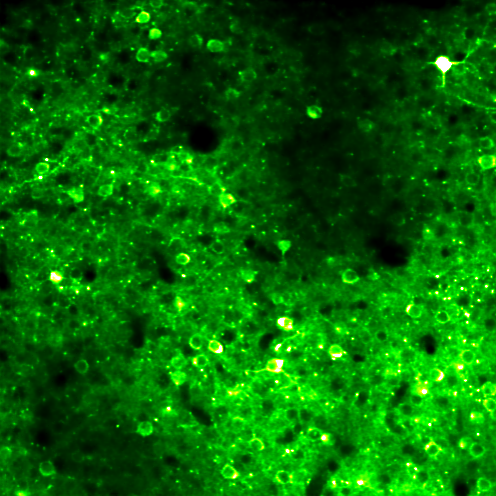
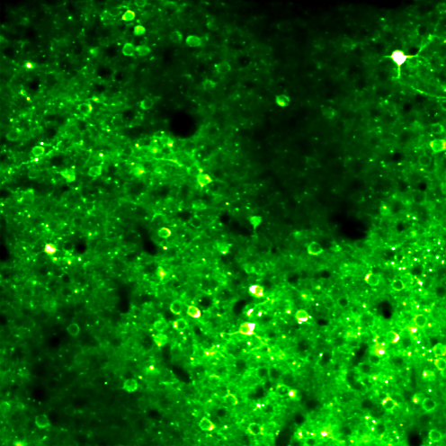
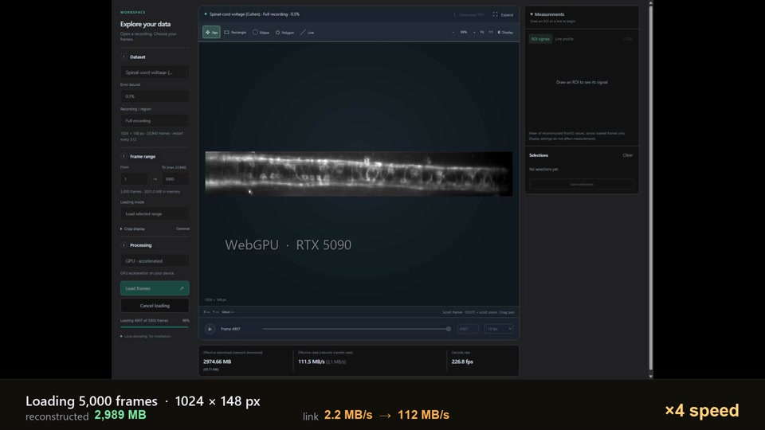

Your familiar workspace.
CPU and OpenCL GPU decoding.
Download pluginError-bounded neural compression
Your images hold more than pixels.
Keep them useful. Make them easier to share.
Cross-platform Error-bounded Representation
of Optical microscopy images
A bound at every pixelYou choose the tolerated relative error.
Less to store. Less to transfer.Neural prediction with encoded correction.
Open where you workBrowser · ImageJ · Python / CUDA
01 / See it in motion
From millisecond voltage signals to
multicolor tissue microstructure.
Compare the input and reconstruction.
Excerpts from the supplementary videos. Playback speed and scale are labeled within each video. Web video is for visualization; numerical checks use the decoded image arrays.
02 / Inspect the difference
XERO stores a final correction alongside its neural prediction. Every reconstructed pixel is checked against the supplied input.
For denoised input, this bounds compression error—not denoising error.
Mouse two-photon calcium · 1% bound
Same frame, LUT and intensity limits.


Measured ROI signal
One matched ROI · shared F₀ · approximately 30 seconds · ΔF/F₀ (%)
03 / Less to move
Actual completed archives.
Not extrapolations from a few frames.
Whole-embryo anatomy
Decimal GB. Uncompressed sizes use retained image dimensions × 2 bytes/pixel, not original file sizes. XERO sizes include the model and required archive metadata. ChAT covers the stitched common-crop volume. Measurement details ↗
04 / Beyond storage
Read compressed images into an analysis,
without writing a full decompressed copy.
05 / How it works
Neural compression with an explicit
pixelwise error contract.
A causal network uses previously reconstructed frames to predict the next image.
Selected seed values guide a spatial network that refines the full frame.
Entropy-coded corrections keep each reconstructed pixel within the chosen bound.
06 / Make it part of your workflow
Explore a recording, open it in ImageJ,
or train XERO on your own data.
Choose a recording. Adjust contrast.
Draw an ROI. Follow the signal.

CPU and OpenCL GPU decoding.
Download pluginPython / CUDA tools and step-by-step tutorials.
Explore the repository